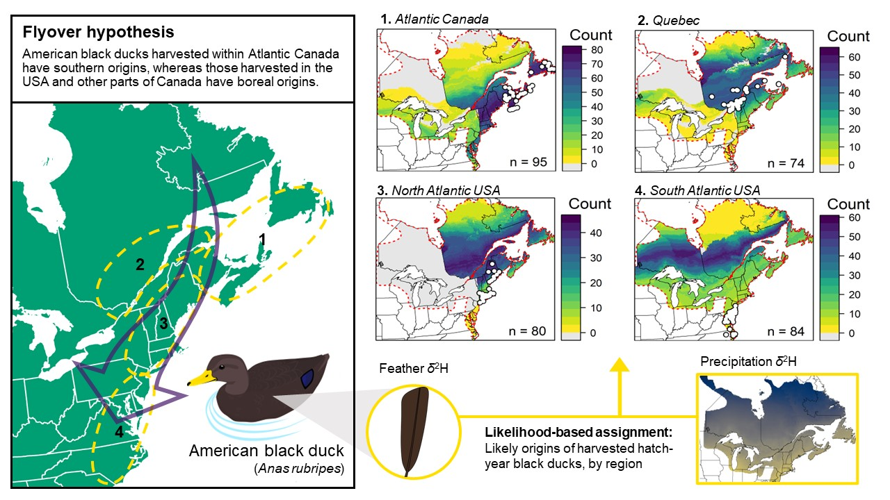
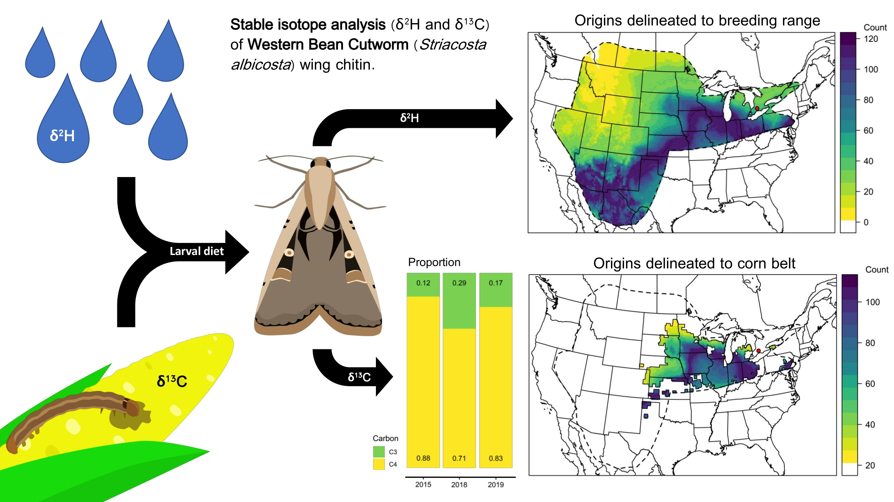
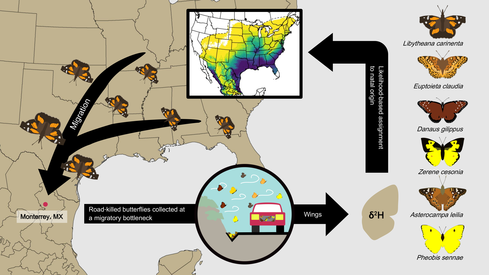
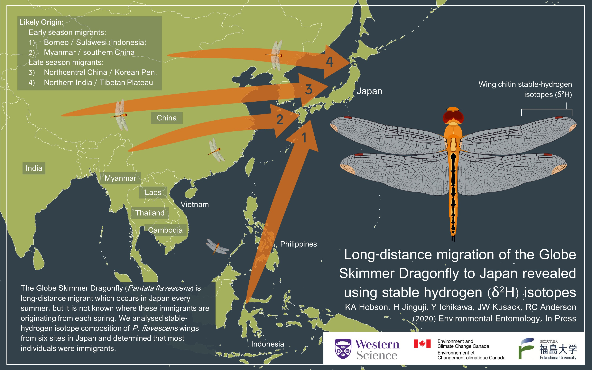
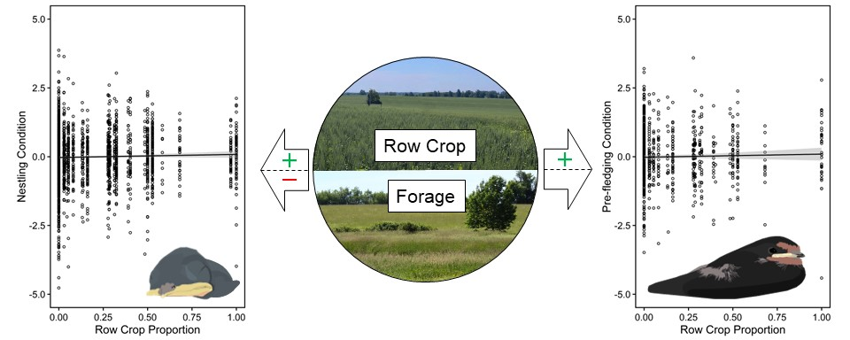

Research Profile
About Me
I am a quantitative ecologist/ornithologist pursuing my PhD at Western University. For my PhD research, I am investigating migration patterns of ducks in the Great Lakes region using stable isotopes. In general, my research interests fall within the category of conservation. My previous research has examine breeding success of Barn Swallows in a mixed agro-ecosystem looking at how agricultural intense crops influenced the body condition and diet of nestlings (Masters of Science in Biology, Western University - Thesis https://ir.lib.uwo.ca/etd/5900/ ).
I've been birding for the better part of a decade and have recently branched out into other taxonomic groups including Diptera, Lepidoptera and Odonata. Most of my time has been spent in southern Ontario, where most of my ecology knowledge is focussed. But I grew up in the Greater Vancouver Area and attended Thompson Rivers University in Kamloops BC for my undergraduate education, so I have some familiarity with the Pacific northwest.
Education
- Ph.D. in Biology, University of Western Ontario, 2019 - 2024 (hopefully...)
- M.Sc. in Biology, University of Western Ontario, 2016 - 2018
- B.Sc. in Zoology w/ Honours, Thompson Rivers University, 2012 - 2016
Current Projects
Hoverfly Migration
Hoverflies are important pollinators across all ecosystems in North America. They also provide pest control as the larval stage of some species predate aphids, thrips, and other pest insects. Despite their importance, very little is known about the movements of hoverflies in North America, outside of anecdotal information. In Europe, several hoverfly species are known migrants, exhibiting mass movements at alpine passes and over waterbodies. Our main objective is to use stable-hydrogen isotopes (δ2H) to investigate migratory vs. locally emergent origin for six species of hoverflies (Eristalis dimidiata, Eristalis tenax, Eristalis arbustorum, Eristalis transversa, Eupeodes americanus, Helophilus fasciatus; Syrphidae) in southern Ontario. We chose species that showed evidence of seasonal range expansion potentially indicative of migratory movements. We expect some local and some migratory individuals with an increased number of migrants during the theoretic migratory window (May and August-October) compared to the summer.
A second component of this was to exploratore if the spatial distribution of hoverflies (or other migratory insects) varies over time. Specifically if the distributions varry over spring and fall migration, which could indicate migratory movements. While many migratory insects do not exhibit clean round-trip migratory behaviour, examining these periods is a good start. We did those using citizen science observations within the iNaturalist platform.
Connectivity of Waterfowl Populations
Conservation and management of migratory birds requires detailed information on connectivity between breeding, wintering, and stopover sites. For harvested waterfowl, it is especially important to deliver adaptive harvest management strategies which rely on evidence-based science.Harvest derivations (i.e., proportion of harvested birds that each breeding region contributed to the total harvest in each harvest area) are used to derive measures of connectivity. These derivations typically rely on leg-band returns, but banding is logistically and financially difficult. Further, current banding effort does not adequately sample the entire breeding range for many northern breeding waterfowl which may introduce bias into harvest derivations based on leg-band returns.
For my PhD research I am using stable-hydrogen isotopes to derive these derivations and explore biases in those based entirely on band-returns. Specifically, I am (1) validating the relationship between precipitation δ2H values and feather δ2H values for waterfowl in North America (Kusack et al. 2023b); (2) compare derivations based on leg-band returns and stable isotopes; (3) investigate the “flyover hypothesis” for harvested American Black Duck across their range, comparing the relationship between age, sex, and region on likely natal/moult origin (Kusack et al. 2023b).
Migratory Songbirds in Cuba
TBD.
Publications
2023
- Kusack, J.W., Tozer, D.C., Harvey, K.M., Schummer, M.L., Hobson, K.A. (2023a) Assigning harvested waterfowl to geographic origin using feather δ2H isoscapes: What is the best analytical approach? PLOS One [in press - PONE-D-23-08212R2].
- Kucia, S.R., Schummer, M.L., Kusack, J.W., Hobson, K.A., Nicolai C.A. (2023) Natal origins of mallards harvested in the Atlantic flyway of North America: Implications for conservation and management. Avian Conservation and Ecology 18:1.
- Kusack, J.W., Tozer, D.C., Schummer, M.L., Hobson, K.A. (2023b) Origins of harvested American black ducks: stable isotopes support the flyover hypothesis. The Journal of Wildlife Management 87:e22324.

2022
- Hobson, K.A., Kusack, J.W., Gootgarts, J., Longstaffe, F.J., McNeil, J.N. (2022) Using stable isotopes (δ2H, δ13C) to identify natal origins and larval host plant use by western bean cutworm, Striacosta albicosta (Lepidoptera: Noctuidae) captured in southern Ontario. Ecological Entomology 47: 347-356.

2021
- Zhao, Q., Mitchell, G.W., Cadman, M.D., Kusack, J.W., Evans, D.R., Bumelis, K., Hobson, K.A., Weegman, M.D., Salvadori, A., Wilson. S. (2021) Integrating regional and site-level data to assess drivers of population decline in insectivorous birds. Biological Conservation 265: 10924.
- Put, J.E., Mitchell, G.W., Mahony, N.A., Costa, J., Imlay, T.L., Bossuyt, S., Boynton, C.K., Burness, G., Evans, D.R., Hobson, K.A., Kusack, J.W., Lansdorp, O., Lenske, A.K., McClenaghan, B., Nol, E., Salvadori, A., Smith, A.C., Williams, T.D., Whittam, B., Cadman, M.D. (2021) Regional variability in trajectories of Barn Swallow populations across Canada are not predicted by breeding performance. Avian Conservation and Ecology 16: 10.
- Kusack, J.W., Mitchell, G.W., Evans, D.R., Cadman, M.D., McCune, J.L., Hobson, K.A. (2021) Diet of nestling Barn Swallows in an agroecosystem: insights from fecal DNA barcoding and feather stable isotopes (δ13C, δ15N). Journal of Ornithology.
- Hobson, K.A., Kusack, J.W., Mora-Alvarez, B.X. (2021) Origins of six species of butterflies migrating through Northeastern Mexico: new insights from stable isotope (δ2H) analyses and a call for documenting butterfly migrations. Diversity 13: 102.

2020
- Hobson, K.A., Jinguji, H., Ichikawa, Y., Kusack, J.W., Anderson, R.C. (2020) Long-distance migration of the Globe Skimmer Dragonfly through Japan revealed using stable hydrogen (δ2H) isotopes. Environmental Entomology, 50: 247–255.

- Beauchamp, A.T., Kusack, J.W., Hobson, K.A., Guglielmo, C.G. (2020) Testing the utility of condition indices in nestling swallows: a quantitative magnetic resonance approach. Journal of Ornithology, 162: 1–13.
- Kusack, J.W., Mitchell, G.W., Evans, D.R., Cadman, M.D., Hobson, K.A. (2020) Effects of agricultural intensification on condition and fledging success of nestling barn swallows (Hirundo rustica). Science of the Total Environment, 709: 136195.

- Palumbo, M.D., Kusack, J.W., Tozer, D.C., Meyer, S.W., Roy, C., Hobson, K.A. (2020) Origins of Blue-winged Teal harvested in Ontario relative to Prairie Canada: implications for the management of a sustainable population in Ontario using stable isotopes. Journal of Field Ornithology, 91: 64–76.
- Evans, D.R., Hobson, K.A., Kusack, J.W., Cadman, M.D., Falconer, M.J., Mitchell, G.W. (2020) Individual condition but not fledging phenology carries over to affect post fledging survival in a Neotropical migratory songbird. Ibis, 162: 331–344.
2017
- LaZerte, S.E., Reudink, M.W., Otter, K.A., Kusack, J., Bailey, J.M., Woolverton, A., Paetkau, M., de Jong, A., Hill, D.J. (2017) feedr and animalnexus.ca: A paired R package and user-friendly Web application for transforming and visualizing animal movement data from static stations. Ecology and Evolution, 7: 7884–7896.
2023
2022
2021
2020
2017
Contact Information
Email: jkusack@uwo.ca